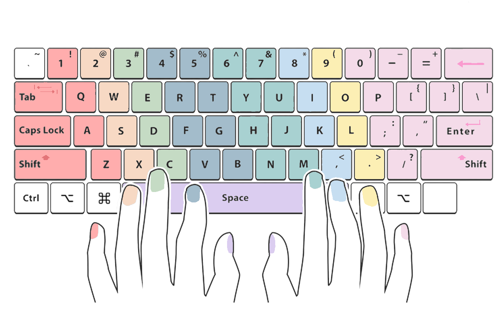

Tips
📚 Type Smarter, Not Harder!
Welcome to the typing improvement zone! Whether you're brand new to typing or want to level up your skills, you're in the right place. This page will guide you through the fundamentals of typing, from finger placement to building speed and accuracy over time.
🖐️ Home Row & Finger Positioning
Look at the keyboard image above. Each key is color-coded to show which finger should press it. This is the foundation of touch typing, the method professional typists use.
The Home Row:
Place your fingers on the middle row of the keyboard:
- Left hand: A (pinky), S (ring), D (middle), F (index)
- Right hand: J (index), K (middle), L (ring), ; (pinky)
- Thumbs: Rest on the spacebar
Notice the small bumps on the F and J keys? These help you find the home row without looking.
🎯 Goal: Keep your fingers on the home row and return them there after pressing any key.
👀 Don’t Look Down
It might be tempting to glance at the keyboard, but training your fingers to move by muscle memory is how you truly get faster.
Try This:
- Use your peripheral vision to guide your fingers.
- Cover your hands with a cloth or keyboard cover.
- Focus on the screen, not the keys.
🎯 Accuracy First, Speed Later
Speed will come naturally, but accuracy is what you want to master first.
Practice Tip:
- Type slowly and carefully at first.
- Avoid rushing; focus on hitting the correct keys.
- Let your brain and fingers build strong connections.
Mistakes are part of learning! But the fewer mistakes you make early on, the faster you'll improve.
✋ Use All Ten Fingers
Many people "hunt and peck" with two fingers, but this limits your typing potential. Typing with all ten fingers means every key has a finger responsible for it.
- Start training your weaker fingers (especially your pinkies).
- It’ll feel unnatural at first, but it gets easier with practice!
🪑 Posture & Setup
Your body position affects your typing endurance and accuracy.
Good Typing Posture Checklist:
- Sit up straight with your feet flat on the floor.
- Keep your elbows bent at a 90 degree angle.
- Position your screen at eye level.
- Keep your wrists floating, not resting above the keyboard.
🔁 Practice Every Day
Typing is just like playing an instrument: the more you practice, the better you get.
Consistency is key, just 10–15 minutes a day can show big results in a few weeks.
Try using the Typing Test Page to warm up and measure your progress!
🧠 Learn from Your Mistakes
Typing errors aren’t bad, they’re valuable feedback.
- Try typing modes that don’t allow backspace to help you stay focused.
- After each session, review which keys or words gave you the most trouble and target them.
There are plenty of great websites with powerful modes and features that you can try out and practice. The most popular one is MonkeyType, but if you prefer a follow-along teaching style with step-by-step guidance, TypingClub is a great place to start.
🔢 Master Numbers & Symbols
Typing well isn't just about letters. Numbers, punctuation, and symbols are just as important—especially for coding, emails, and writing professionally.
Practice these regularly:
- Numbers (1–0)
- Punctuation marks (.,?!;)
- Special symbols (!@#$%^&*)
📈 Track Your Progress
Improvement is motivating! Keep an eye on your key stats:
- WPM (Words Per Minute)
- Accuracy %
- Most common mistakes
Visit the Results Page to see how you're improving over time.
💬 Be Patient, Be Consistent
Typing faster and more accurately won’t happen overnight. Everyone learns at their own pace, and progress might be slow at first.
🌱 Trust the process, and before long, you’ll be typing like a pro.
🧪 Ready to put your skills to the test?